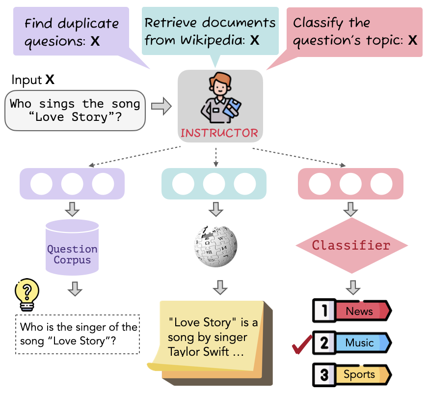
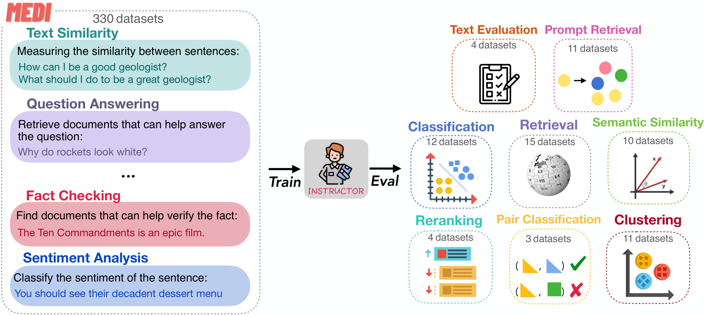
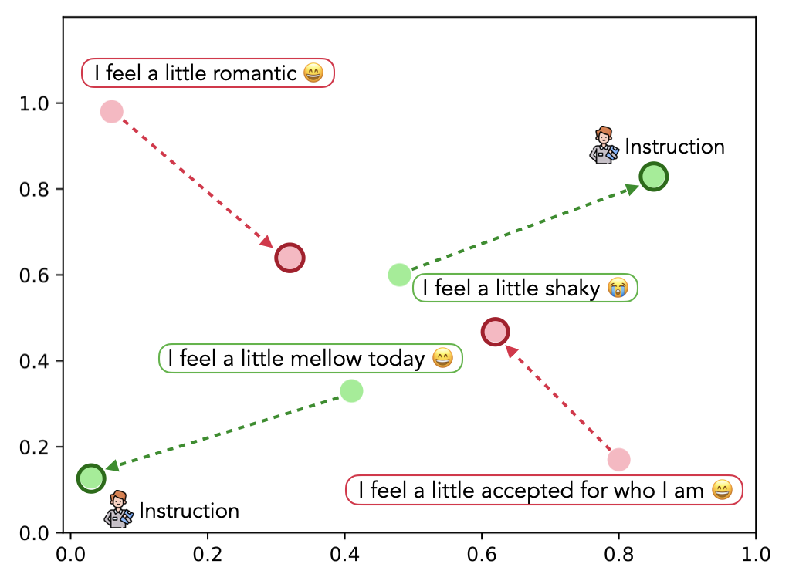

原文: arXiv:2212.09741（ACL 2023 Findings） 说明: 本文为论文全文中文技术展开，公式编号与原文一致；图片自 arXiv HTML 抽取，caption 中译；表格数值保留原始数字，仅表头/说明中译。
预印本信息： arXiv:2212.09741v3 [cs.CL]，2023 年 5 月 30 日更新；会议版本：ACL 2023 Findings。
项目主页： https://instructor-embedding.github.io
一个编码器，任何任务：指令微调的文本嵌入（One Embedder, Any Task: Instruction-Finetuned Text Embeddings）¶
作者： Hongjin Su♠*、Weijia Shi♣*、Jungo Kasai♣、Yizhong Wang♣、Yushi Hu♣、Mari Ostendorf♣、Wen-tau Yih♢、Noah A. Smith♣♡、Luke Zettlemoyer♣♢、Tao Yu♠
单位： ♠ 香港大学；♣ 华盛顿大学；♢ Meta AI；♡ 艾伦人工智能研究所
邮箱： {hjsu, tyu}@cs.hku.hk · {yushihu, ostendor}@uw.edu · scottyih@meta.com · {swj0419, jkasai, yizhongw, nasmith, lsz}@cs.washington.edu
* 前两位作者贡献相同。
摘要（Abstract）¶
本文提出 INSTRUCTOR（INSTRUCtion-based Omnifarious Representations），一种在给定任务指令时计算文本嵌入的新方法：每一段文本都与描述其用途的指令（任务与领域说明）一起嵌入。与既往那些只处理"单一文本输入"、且往往专用于某类任务的编码器不同，INSTRUCTOR 是一个单一的嵌入模型，能够根据下游任务与领域生成定制化的嵌入，且无需针对该任务再做训练。
作者做了两件事：
- 为 330 个多样化任务 标注人类可读的自然语言指令；
- 用对比学习在这份多任务混合数据上训练 INSTRUCTOR。
在 70 个嵌入评测任务 上（其中 66 个训练时未见过）——涵盖分类、信息检索、语义相似度、文本生成评价等——INSTRUCTOR 与既往最佳模型相比，参数量少了一个数量级，却平均提高 3.4%。分析显示 INSTRUCTOR 对指令改写鲁棒；指令微调也让"训单模型跨多样数据"变得可行。模型、代码与数据均已开放：https://instructor-embedding.github.io。
1 引言（Introduction）¶
背景。文本嵌入把离散文本输入（句子、文档、代码）表示为定长向量，服务下游任务：语义文本相似度（STS）、信息检索（IR）、自动评价、prompt 检索（供大模型做上下文学习）等。近年在句向量学习上取得显著进展（Kiros et al., 2015; Conneau et al., 2017; Logeswaran & Lee, 2018; Reimers & Gurevych, 2019; Gao et al., 2021; Ni et al., 2021, 2022），但每一个模型往往专用于某一类任务或数据集。
问题。既有嵌入应用到新任务或新领域时性能大幅下滑（Thakur et al., 2021; Muennighoff et al., 2022）。例如：DPR（Karpukhin et al., 2020）擅长检索而弱于文本相似度；SimCSE（Gao et al., 2021）反过来。同类任务跨领域（如医学、金融）表现也差。常见做法是在下游任务与领域上再微调——但需要大量标注（Gururangan et al., 2020）。
假设。作者提出：同一段文本的嵌入，可以通过给出任务/领域描述而被"调整"到适合不同下游任务，从而无需针对任务/领域再训练。
方法。INSTRUCTOR 是一个多任务模型，输入为文本 + 任务指令：
- 训练时把每条样本 \((x)\) 与它的指令 \(I_x\) 拼接后一起过编码器；
- 训练数据是多任务混合——包括对称任务（如 STS）与非对称任务（如 QA 检索）；
- 训练目标是标准的对比学习（正对拉近、负对推开）。
指令的作用：让同一段文本在不同任务下产出不同嵌入——例：给 "Who sings the song 'Love Story'?"
- 作同义问题检索时嵌入 A；
- 作查 Wikipedia 支持文档时嵌入 B；
- 作话题分类时嵌入 C。

图 1（原文对应图 1）： 推理时 INSTRUCTOR 会根据文本输入 + 任务指令同时产出嵌入。同一个问题 "Who sings the song 'Love Story'?" 在三种任务下（同义问题检索、Wikipedia 检索、话题分类）会被投影到不同的向量——指令改变了嵌入方向。
数据（MEDI）。作者构造 MEDI（Multitask Embeddings Data with Instructions），330 个数据集，每条都配有人写指令。它由两部分组成：
- Super-NaturalInstructions（super-NI，Wang et al., 2022b）的 300 个任务；
- 30 个已有嵌入训练数据集（sentence-transformers、KILT、MedMCQA、MS MARCO、NQ、SNLI/MNLI、Quora Duplicate、SPECTER 等）。
对 super-NI，原始没有正/负对——作者用 Sentence-T5 打相似度分数自动挖对（对分类任务用同标签作正、异标签作难负；对 seq2seq 任务用 \(s_{\text{pos}}, s_{\text{neg}}\) 打分挑对）。
评测。作者在 70 个数据集上评测——66 个训练时未见过：MTEB（Muennighoff 2022，56 集，7 大类）+ Billboard（Kasai 2022，3 个文本生成评价）+ Prompt Retrieval（Su 2022，11 个 in-context learning 示例检索）。
主结果：INSTRUCTOR-Large（335M）在 3 大基准上平均比同规模 GTR-Large 高 5.9%；比之前最佳 4.8B 参数 Sent-T5-XXL 高 3.4%。
贡献：
- 提出 INSTRUCTOR 与 MEDI，展示了"一个模型 + 自然语言指令 → 任意任务嵌入"的可行性；
- 首次系统性说明指令微调对嵌入模型跨任务泛化的重要性；
- 提供对指令改写鲁棒性、复杂度、模型规模、域偏移等多角度分析。
2 INSTRUCTOR¶
2.1 嵌入架构（Embedding Architecture）¶
INSTRUCTOR 建立在单编码器架构（Izacard & Grave, 2021; Ni et al., 2021, 2022）上。采用 GTR 系列（Ni et al., 2022，基于 T5-encoder 初始化 + 检索预训练）作为骨干：
- INSTRUCTOR-Base ← GTR-Base（110M）
- INSTRUCTOR ← GTR-Large（335M）
- INSTRUCTOR-XL ← GTR-XL（1.5B）
给定文本 \(x\) 与其任务指令 \(I_x\)，INSTRUCTOR 编码它们的拼接 \(I_x \oplus x\)，然后在文本 \(x\) 的 token 上做 mean pooling（指令的 token 不参与 pooling，但通过 self-attention 隐式影响 \(x\) 的表征）：
2.2 训练目标（Training Objective）¶
作者把多种任务都规约为 "从候选中挑正例" 的对比学习。每条训练样本 = 元组 \((x, I_x, y, I_y)\)：
- 检索：\(x\) 是 query，\(y^+\) 是相关文档，\(y^-_i\) 是不相关文档。
- 相似度：\(x, y\) 通常来自同一集合、格式相似。
- 分类：正对 = 同类的两条文本，负对 = 异类。构造细节见 §2.3。
指令依任务而定。对对称任务（如 STS），\(I_x = I_y\)；对非对称任务（如检索），\(I_x\) 描述 query 侧、\(I_y\) 描述文档侧。
候选 \(y\) 与 \(x\) 的相似度：余弦：
损失（Ni et al., 2021 风格，带温度）：
\(\gamma\) 是 softmax 温度，\(\mathcal{B}\) 是 \(\{y^+\} \cup \{y^-_i\}_{i=1}^k\)。作者取 \(k = 4\)。双向 loss：\(x\) 与 \(y\) 位置互换后再算一次 loss 相加（Ni et al., 2021）。
2.3 MEDI：多任务嵌入指令数据集（Multitask Embeddings Data with Instructions）¶
目标：为多样化任务同时提供正/负对与自然语言指令。作者组合两个源：
来源 1：super-NI 300 任务（Wang et al., 2022b）——自带指令但没有正/负对。作者用 Sentence-T5（Ni et al., 2022，不加指令记作 \(E(\cdot)\)）打分自动挖对：
- 分类数据集：计算样本对的 embedding 余弦相似度 \(\cos(E(x_i), E(x_j))\)；相似度高且同标签→ 正对；相似度高但异标签→ 难负对。
-
生成/seq2seq 数据集：对每对候选计算两个分数：
\[ s_{\text{pos}} = \cos(E(x_i), E(x_j)) + \cos(E(y_i), E(y_j)) \]\[ s_{\text{neg}} = \cos(E(x_i), E(x_j)) - \cos(E(y_i), E(y_j)) \]选 \(s_{\text{pos}}\) 最高的作正对、\(s_{\text{neg}}\) 最高的作难负对。
直觉：输入相近但输出相远的样本对才是"看似相关但实际不相关"的难负例。
每条 super-NI 训练样本用 1 个难负例 + in-batch 负例。作者在 §4.2 展示 super-NI 里指令的多样性对提升"指令改写鲁棒性"至关重要。
来源 2：30 个既有嵌入训练数据集（Sentence Transformers embedding data、KILT、MedMCQA）。这些自带正对，部分（如 MS MARCO、NQ）自带难负对。作者按 Ni et al. (2021) 用 4 个负对（hard 或 in-batch）微调。
指令标注。这些既有数据集没有指令，作者统一模板 + 每集手写：
三部分：
- Text Type（必填）：输入文本类型（如"question"、"passage"、"review"）；
- Task Objective（可选）：使用意图（如"for retrieving supporting documents"、"for classifying emotion"）；
- Domain（可选）：领域（如"Wikipedia"、"News"、"Medicine"）。
例（NQ 检索）：
- Query 指令：
"Represent the Wikipedia question for retrieving supporting documents:" - Doc 指令：
"Represent the Wikipedia document for retrieval:"
STS 类对称任务："Represent the statement:"（两侧同）。
MEDI 训练与评测数据的整体分布：

图 2（原文对应图 2）： INSTRUCTOR 训练与评测流水线。左侧展示 MEDI 训练数据（330 个数据集覆盖多任务）；右侧展示 70 个评测数据集分布在 8 大类：Text Similarity（10 STS 相似度）、Question Answering（15 检索）、Fact Checking、Sentiment Analysis（12 分类）、Semantic Similarity、Pair Classification（3）、Clustering（11）、Reranking（4）、Prompt Retrieval（11）、Text Evaluation（3）。66/70 数据集训练时未见过。
3 实验（Experiments）¶
作者在 MEDI 上训 INSTRUCTOR，在 3 大基准（MTEB、Billboard、Prompt Retrieval）共 70 个下游任务上评测——均达到当时的 SOTA。
3.1 主要结果（Main Results）¶
表 2：MTEB + Billboard + Prompt Retrieval 综合
| 基准 | MTEB | Billboard | Prompt | 平均 | ||||||
|---|---|---|---|---|---|---|---|---|---|---|
| 任务类型 | Retri. | Rerank | Cluster | Pair. | Class. | STS | Sum. | Avg. | Text Eval. | Retri. |
| # 数据集 | 15 | 4 | 11 | 3 | 12 | 10 | 1 | 56 | 3 | 11 |
| 参考：< 500M 小模型 | ||||||||||
| SimCSE (110M) | 21.9 | 47.5 | 33.4 | 73.7 | 67.3 | 79.1 | 23.3 | 48.7 | 29.4 | 58.3 |
| coCondenser (110M) | 33.0 | 51.8 | 37.6 | 81.7 | 64.7 | 76.5 | 29.5 | 52.4 | 31.5 | 59.6 |
| Contriever (110M) | 41.9 | 53.1 | 41.1 | 82.5 | 66.7 | 76.5 | 30.4 | 56.0 | 29.0 | 57.3 |
| GTR-Large (335M) | 47.4 | 55.4 | 41.6 | 85.3 | 67.1 | 78.2 | 29.5 | 58.3 | 31.2 | 59.8 |
| INSTRUCTOR (335M) | 47.6 | 57.5 | 45.3 | 85.9 | 73.9 | 83.2 | 31.8 | 61.6 | 36.9 | 63.2 |
| 相对增益 (%) | +0.4 | +4.5 | +8.9 | +0.7 | +10.1 | +6.4 | +7.8 | +5.7 | +18.3 | +5.7 |
| 参考：≥ 500M 大模型 | ||||||||||
| Sent-T5-XXL (4.8B) | 42.2 | 56.4 | 43.7 | 85.1 | 73.4 | 82.6 | 30.1 | 59.5 | 33.9 | 61.5 |
| GTR-XXL (4.8B) | 48.1 | 56.7 | 42.4 | 86.1 | 67.4 | 78.4 | 30.6 | 58.9 | 32.0 | 60.8 |
| SGPT-NLI (5.8B) | 32.3 | 52.3 | 37.0 | 77.0 | 70.1 | 80.5 | 30.4 | 53.7 | 29.6 | 57.9 |
| GTR-XL (1.5B) | 48.0 | 56.0 | 41.5 | 86.1 | 67.1 | 77.8 | 30.2 | 58.4 | 32.0 | 60.4 |
| INSTRUCTOR-XL (1.5B) | 49.3 | 57.3 | 44.7 | 86.6 | 73.2 | 83.1 | 32.0 | 61.8 | 34.1 | 68.6 |
| 相对增益 (%) | +2.7 | +2.3 | +7.7 | +0.6 | +9.1 | +6.9 | +6.0 | +5.8 | +6.6 | +13.6 |
（表 2：70 个下游任务综合评测。相对增益是 INSTRUCTOR 相对于同规模 GTR 的百分比提升。）
关键读点：
- INSTRUCTOR-Large（335M）比同骨干 GTR-Large 提高 5.9%（平均）；
- INSTRUCTOR-Large 甚至超过 4.8B 的 Sent-T5-XXL（58.4 vs 56.5）——指令微调让"1/10 参数量"抵得过原来大 10 倍的模型；
- 各任务类别都有显著提升：Text Evaluation +18.3%、Classification +10.1%、Clustering +8.9%——GTR 只训检索类任务，指令让它在非检索任务上补齐了；
- INSTRUCTOR-XL（1.5B）在 Prompt Retrieval 上 68.6（+13.6% vs GTR-XL），成为该子任务的清晰 SOTA。
"专用模型"的局限：
- 检索类模型（GTR-XXL）：Retrieval / Reranking 强，STS / Classification 弱；
- 相似度类模型（Sent-T5-XXL）：STS / Classification / Text Eval 强，Retrieval 差；
INSTRUCTOR 提供通用嵌入——所有类别都强。
4 分析与消融（Analysis and Ablations）¶
作者从多角度分析 INSTRUCTOR 为何有效。
4.1 指令让"多样训练数据"变可行（Instructions Enable Diverse Training）¶
作者把 MEDI 拆成对称组（Sym.，如 STS）与非对称组（Asym.，如开放域 QA），做三种训练：
- 只训 sym；
- 只训 asym；
- 训 sym + asym（完整 MEDI）。
每种再分：加指令 vs 不加指令。
图 3 展示（原文对应图 3）：
- 若只训 sym 或只训 asym，加不加指令差别不大；
- 若同时训 sym + asym：不加指令时性能反而下降（相比 GTR baseline），因为两类数据的目标互相冲突；加指令后 sym + asym 联合训练取得最好结果（累加 sym 与 asym 各自的收益）。
关键洞见：Sent-T5 只训对称组、GTR 只训非对称组是因为两组数据放在一起会互相干扰；指令解决了这个干扰——同一个模型看到指令后知道"这是 sym 还是 asym 任务"，学习到对应的表征方式。
4.2 指令改写鲁棒性（Instruction Robustness）¶
既有指令微调语言模型（Sanh et al., 2022; Zhou et al., 2022）对指令改写不鲁棒。作者手写 5 个改写版本 给每个评测数据集，测最好版本 vs 最差版本的差距：
图 4 展示：
- 不加 super-NI：最好与最差版本差异 ~5+；
- 加 super-NI（作者最终配方）：最好与最差版本差异压到 ~1。
结论：super-NI 里 300 个任务的指令风格差异极大——训练时见过这么多样化的表达，模型对指令改写自然鲁棒。这对生产环境非常重要：线上很难保证指令一字不差。
4.3 指令复杂度（Complexity of Instructions）¶
作者按复杂度分 4 档：
- N/A：不加指令；
- tag：只把数据集名字附上（如
"Natural Questions; Input: who sings the song Love Story"）； - simple：一两词描述领域（如
"Wikipedia Questions; Input: ..."）； - detailed：作者的完整模板。
图 5 展示：
- 从无指令 → tag：已经超过 GTR（说明指令做区分本身就有用）；
- 复杂度递增 → 分数连续上升；
- detailed 最好——完整指令说明是关键。
推论：指令不是简单的"任务开关"，而是语义特征选择器——描述越具体，模型越能突出对应特征。生产环境应至少提供 text type + domain。
4.4 模型规模效应（Model Sizes）¶
图 6 展示：GTR 与 INSTRUCTOR 从 0.1B → 0.3B → 1.5B，两者都随规模变强，但 INSTRUCTOR 的斜率更陡——指令带来的收益在大模型上更显著。大模型更能利用指令这一"额外自由度"。
4.5 未见领域的收益（Instructions Mitigate Domain Shifts）¶
作者选了 3 个 INSTRUCTOR 未训过的领域：Geography、Biology、Civil Comments。
表 3：未见领域
| 模型 | Geography | Biology | Civil |
|---|---|---|---|
| GTR-Large | 53.4 | 25.7 | 71.8 |
| INSTRUCTOR | 64.2 | 31.3 | 77.2 |
| 相对增益 (%) | +20.2 | +21.8 | +7.5 |
（表 3：未见领域下的分数。领域越专、指令收益越大。）
观察：Geography 与 Biology 是专门领域，INSTRUCTOR 提升尤大（+20% 相对）；Civil Comments 是通用文本，提升较小（+7.5%）。领域越远，指令越有用——这与直觉一致：指令帮助模型"专注该领域的关键特征"。
4.6 定性可视化（Qualitative Analysis）¶
作者用 t-SNE 可视化"pair classification"中两组样例：红色对（同情感）应聚拢、绿色对（异情感）应远离。

图 7（原文对应图 7）： Pair Classification 样例的 t-SNE 可视化。无指令（普通圆点）：红色对不够近、绿色对不够远；加指令（带实线边框的圆点）：红色对被拉得更近、绿色对被推得更远。指令让分类空间从"混"变成"分"——同类正对聚拢、异类负对分离。
5 相关工作（Related Work）¶
文本嵌入。SBERT（Reimers & Gurevych, 2019）与 SimCSE（Gao et al., 2021）主要用于相似度与分类；DPR（Karpukhin et al., 2020）与 Contriever（Izacard et al., 2022）专攻检索。Sent-T5（Ni et al., 2022）只训对称数据、GTR（Ni et al., 2021）只训非对称数据——两者各有短板。INSTRUCTOR 结合两组，靠指令区分。E5（Wang et al., 2022a）是同期强 baseline，用弱监督对比预训练，嵌入维度更大。
指令微调。指令微调让语言模型能从自然语言指令中学习到新任务（Mishra et al., 2022; Zhong et al., 2021; Min et al., 2022; Sanh et al., 2022; Wei et al., 2022; Wang et al., 2022b; Ouyang et al., 2022），但在嵌入模型上尚未被系统研究。同期 Asai et al. (2022) 用指令做任务感知检索——但只在检索上评测，不覆盖 8 大类。
6 结论（Conclusion）¶
作者提出 INSTRUCTOR：一个通过自然语言指令创建广泛适用文本嵌入的模型。构造了 MEDI（330 任务 + 指令）；在 70 个下游任务（含 66 个未见）上取得当时 SOTA；在几个新的评测——few-shot in-context learning 示例检索、文本生成评价——上也表现出色。作者开源代码、数据与预训练权重。
7 局限（Limitations）¶
- 仅用了 4 个负例（因计算受限）——增大负例数量、探索 hard negative mining 是未来方向。
- 未能把指令微调应用到 GTR-XXL（4.8B 参数）——待后续验证。
- 指令设计：统一模板已有效，但可以探索更多元素——加示例（demonstration examples）、加解释（explanations）等（Wang et al., 2022b）都被证明有帮助。
附录索引（Appendix Highlights）¶
- A MTEB 数据集详情、评测细节；
- B Prompt Retrieval 与 Billboard 评测细节；
- C MEDI 具体训练指令列表（每个数据集的完整模板）；
- D 消融补充：不同指令模板变体、温度扫描、负例数扫描；
- E 相关工作细节；
翻译约定：文本嵌入（text embedding）、指令微调（instruction finetuning）、对比学习（contrastive learning）、对称任务（symmetric task）、非对称任务（asymmetric task）、难负例（hard negative）、in-batch 负例、mean pooling、语义文本相似度（STS）、上下文学习（in-context learning）。GTR / T5 / SBERT / SimCSE / DPR / Contriever / MTEB / super-NI / MEDI / MS MARCO / NQ / KILT 按惯例不译。